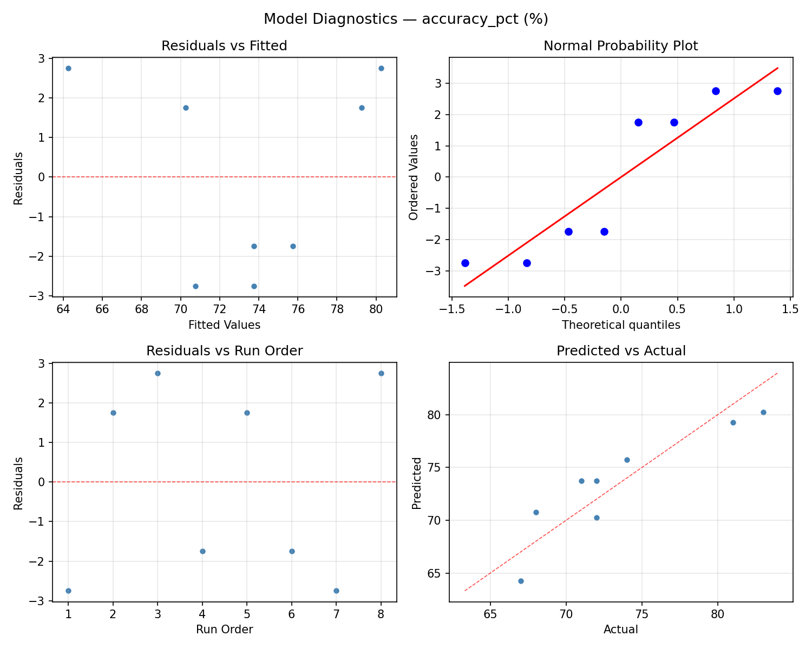
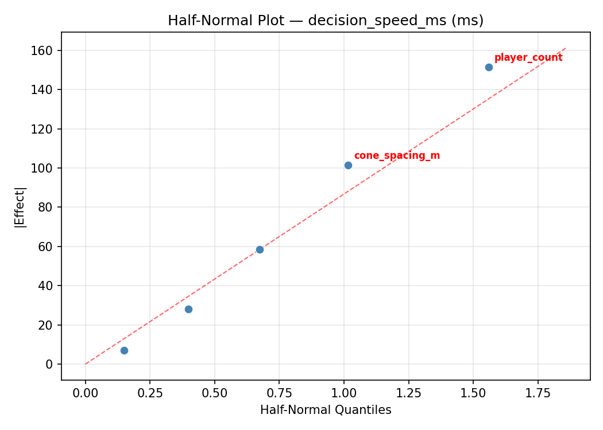

Summary
This experiment investigates soccer passing drill design. Plackett-Burman screening of pass distance, player count, tempo, rest interval, and cone spacing for passing accuracy and decision speed.
The design varies 5 factors: pass dist m (m), ranging from 5 to 20, player count (players), ranging from 4 to 10, tempo bpm (bpm), ranging from 60 to 120, rest sec (sec), ranging from 10 to 60, and cone spacing m (m), ranging from 2 to 8. The goal is to optimize 2 responses: accuracy pct (%) (maximize) and decision speed ms (ms) (minimize). Fixed conditions held constant across all runs include ball type = size_5, surface = artificial_turf.
A Plackett-Burman screening design was used to efficiently test 5 factors in only 8 runs. This design assumes interactions are negligible and focuses on identifying the most influential main effects.
Key Findings
For accuracy pct, the most influential factors were tempo bpm (43.2%), player count (35.1%), pass dist m (13.5%). The best observed value was 83.0 (at pass dist m = 5, player count = 4, tempo bpm = 120).
For decision speed ms, the most influential factors were tempo bpm (51.3%), cone spacing m (32.6%), pass dist m (9.3%). The best observed value was 632.0 (at pass dist m = 20, player count = 10, tempo bpm = 120).
Recommended Next Steps
- Follow up with a response surface design (CCD or Box-Behnken) on the top 3–4 factors to model curvature and find the true optimum.
- Consider whether any fixed factors should be varied in a future study.
- The screening results can guide factor reduction — drop factors contributing less than 5% and re-run with a smaller, more focused design.
Experimental Setup
Factors
| Factor | Low | High | Unit |
|---|
pass_dist_m | 5 | 20 | m |
player_count | 4 | 10 | players |
tempo_bpm | 60 | 120 | bpm |
rest_sec | 10 | 60 | sec |
cone_spacing_m | 2 | 8 | m |
Fixed: ball_type = size_5, surface = artificial_turf
Responses
| Response | Direction | Unit |
|---|
accuracy_pct | ↑ maximize | % |
decision_speed_ms | ↓ minimize | ms |
Configuration
{
"metadata": {
"name": "Soccer Passing Drill Design",
"description": "Plackett-Burman screening of pass distance, player count, tempo, rest interval, and cone spacing for passing accuracy and decision speed"
},
"factors": [
{
"name": "pass_dist_m",
"levels": [
"5",
"20"
],
"type": "continuous",
"unit": "m"
},
{
"name": "player_count",
"levels": [
"4",
"10"
],
"type": "continuous",
"unit": "players"
},
{
"name": "tempo_bpm",
"levels": [
"60",
"120"
],
"type": "continuous",
"unit": "bpm"
},
{
"name": "rest_sec",
"levels": [
"10",
"60"
],
"type": "continuous",
"unit": "sec"
},
{
"name": "cone_spacing_m",
"levels": [
"2",
"8"
],
"type": "continuous",
"unit": "m"
}
],
"fixed_factors": {
"ball_type": "size_5",
"surface": "artificial_turf"
},
"responses": [
{
"name": "accuracy_pct",
"optimize": "maximize",
"unit": "%"
},
{
"name": "decision_speed_ms",
"optimize": "minimize",
"unit": "ms"
}
],
"settings": {
"operation": "plackett_burman",
"test_script": "use_cases/218_soccer_passing_drill/sim.sh"
}
}
Experimental Matrix
The Plackett-Burman Design produces 8 runs. Each row is one experiment with specific factor settings.
| Run | pass_dist_m | player_count | tempo_bpm | rest_sec | cone_spacing_m |
|---|
| 1 | 20 | 10 | 120 | 10 | 2 |
| 2 | 5 | 4 | 120 | 60 | 2 |
| 3 | 5 | 10 | 60 | 60 | 2 |
| 4 | 20 | 10 | 120 | 60 | 8 |
| 5 | 5 | 10 | 60 | 10 | 8 |
| 6 | 20 | 4 | 60 | 60 | 8 |
| 7 | 5 | 4 | 120 | 10 | 8 |
| 8 | 20 | 4 | 60 | 10 | 2 |
Step-by-Step Workflow
1
Preview the design
$ python doe.py info --config use_cases/218_soccer_passing_drill/config.json
2
Generate the runner script
$ python doe.py generate --config use_cases/218_soccer_passing_drill/config.json \
--output use_cases/218_soccer_passing_drill/results/run.sh --seed 42
3
Execute the experiments
$ bash use_cases/218_soccer_passing_drill/results/run.sh
4
Analyze results
$ python doe.py analyze --config use_cases/218_soccer_passing_drill/config.json
5
Get optimization recommendations
$ python doe.py optimize --config use_cases/218_soccer_passing_drill/config.json
6
Multi-objective optimization
With 2 competing responses, use --multi to find the best compromise via Derringer–Suich desirability.
$ python doe.py optimize --config use_cases/218_soccer_passing_drill/config.json --multi
7
Generate the HTML report
$ python doe.py report --config use_cases/218_soccer_passing_drill/config.json \
--output use_cases/218_soccer_passing_drill/results/report.html
Features Exercised
| Feature | Value |
|---|
| Design type | plackett_burman |
| Factor types | continuous (all 5) |
| Arg style | double-dash |
| Responses | 2 (accuracy_pct ↑, decision_speed_ms ↓) |
| Total runs | 8 |
Analysis Results
Generated from actual experiment runs using the DOE Helper Tool.
Response: accuracy_pct
Top factors: tempo_bpm (43.2%), player_count (35.1%), pass_dist_m (13.5%).
ANOVA
| Source | DF | SS | MS | F | p-value |
|---|
| Source | DF | SS | MS | F | p-value |
| pass_dist_m | 1 | 12.5000 | 12.5000 | 6.667 | 0.0493 |
| player_count | 1 | 84.5000 | 84.5000 | 45.067 | 0.0011 |
| tempo_bpm | 1 | 128.0000 | 128.0000 | 68.267 | 0.0004 |
| rest_sec | 1 | 2.0000 | 2.0000 | 1.067 | 0.3490 |
| cone_spacing_m | 1 | 0.5000 | 0.5000 | 0.267 | 0.6276 |
| pass_dist_m*player_count | 1 | 128.0000 | 128.0000 | 68.267 | 0.0004 |
| pass_dist_m*tempo_bpm | 1 | 84.5000 | 84.5000 | 45.067 | 0.0011 |
| pass_dist_m*rest_sec | 1 | 0.5000 | 0.5000 | 0.267 | 0.6276 |
| pass_dist_m*cone_spacing_m | 1 | 2.0000 | 2.0000 | 1.067 | 0.3490 |
| player_count*tempo_bpm | 1 | 12.5000 | 12.5000 | 6.667 | 0.0493 |
| player_count*rest_sec | 1 | 0.5000 | 0.5000 | 0.267 | 0.6276 |
| player_count*cone_spacing_m | 1 | 2.0000 | 2.0000 | 1.067 | 0.3490 |
| tempo_bpm*rest_sec | 1 | 2.0000 | 2.0000 | 1.067 | 0.3490 |
| tempo_bpm*cone_spacing_m | 1 | 0.5000 | 0.5000 | 0.267 | 0.6276 |
| rest_sec*cone_spacing_m | 1 | 12.5000 | 12.5000 | 6.667 | 0.0493 |
| Error | (Lenth | PSE) | 5 | 9.3750 | 1.8750 |
| Total | 7 | 230.0000 | 32.8571 | | |
Pareto Chart

Main Effects Plot

Normal Probability Plot of Effects

Half-Normal Plot of Effects

Model Diagnostics

Response: decision_speed_ms
Top factors: tempo_bpm (51.3%), cone_spacing_m (32.6%), pass_dist_m (9.3%).
ANOVA
| Source | DF | SS | MS | F | p-value |
|---|
| Source | DF | SS | MS | F | p-value |
| pass_dist_m | 1 | 1922.0000 | 1922.0000 | 0.667 | 0.4513 |
| player_count | 1 | 420.5000 | 420.5000 | 0.146 | 0.7182 |
| tempo_bpm | 1 | 58824.5000 | 58824.5000 | 20.404 | 0.0063 |
| rest_sec | 1 | 128.0000 | 128.0000 | 0.044 | 0.8414 |
| cone_spacing_m | 1 | 23762.0000 | 23762.0000 | 8.242 | 0.0350 |
| pass_dist_m*player_count | 1 | 58824.5000 | 58824.5000 | 20.404 | 0.0063 |
| pass_dist_m*tempo_bpm | 1 | 420.5000 | 420.5000 | 0.146 | 0.7182 |
| pass_dist_m*rest_sec | 1 | 23762.0000 | 23762.0000 | 8.242 | 0.0350 |
| pass_dist_m*cone_spacing_m | 1 | 128.0000 | 128.0000 | 0.044 | 0.8414 |
| player_count*tempo_bpm | 1 | 1922.0000 | 1922.0000 | 0.667 | 0.4513 |
| player_count*rest_sec | 1 | 12012.5000 | 12012.5000 | 4.167 | 0.0967 |
| player_count*cone_spacing_m | 1 | 20604.5000 | 20604.5000 | 7.147 | 0.0442 |
| tempo_bpm*rest_sec | 1 | 20604.5000 | 20604.5000 | 7.147 | 0.0442 |
| tempo_bpm*cone_spacing_m | 1 | 12012.5000 | 12012.5000 | 4.167 | 0.0967 |
| rest_sec*cone_spacing_m | 1 | 1922.0000 | 1922.0000 | 0.667 | 0.4513 |
| Error | (Lenth | PSE) | 5 | 14415.0000 | 2883.0000 |
| Total | 7 | 117674.0000 | 16810.5714 | | |
Pareto Chart

Main Effects Plot

Normal Probability Plot of Effects

Half-Normal Plot of Effects

Model Diagnostics

Response Surface Plots
3D surfaces fitted with quadratic RSM. Red dots are observed data points.
accuracy pct pass dist m vs cone spacing m

accuracy pct pass dist m vs player count

accuracy pct pass dist m vs rest sec

accuracy pct pass dist m vs tempo bpm

accuracy pct player count vs cone spacing m

accuracy pct player count vs rest sec

accuracy pct player count vs tempo bpm

accuracy pct rest sec vs cone spacing m

accuracy pct tempo bpm vs cone spacing m

accuracy pct tempo bpm vs rest sec

decision speed ms pass dist m vs cone spacing m

decision speed ms pass dist m vs player count

decision speed ms pass dist m vs rest sec

decision speed ms pass dist m vs tempo bpm

decision speed ms player count vs cone spacing m

decision speed ms player count vs rest sec

decision speed ms player count vs tempo bpm

decision speed ms rest sec vs cone spacing m

decision speed ms tempo bpm vs cone spacing m

decision speed ms tempo bpm vs rest sec

Multi-Objective Optimization
When responses compete, Derringer–Suich desirability finds the best compromise.
Each response is scaled to a 0–1 desirability, then combined via a weighted geometric mean.
Overall Desirability
D = 0.9108
Per-Response Desirability
| Response | Weight | Desirability | Predicted | Dir |
|---|
accuracy_pct |
1.5 |
|
83.00 0.9545 83.00 % |
↑ |
decision_speed_ms |
1.0 |
|
680.00 0.8489 680.00 ms |
↓ |
Recommended Settings
| Factor | Value |
|---|
pass_dist_m | 5 m |
player_count | 10 players |
tempo_bpm | 60 bpm |
rest_sec | 10 sec |
cone_spacing_m | 8 m |
Source: from observed run #3
Trade-off Summary
Sacrifice = how much worse than single-objective best.
| Response | Predicted | Best Observed | Sacrifice |
|---|
decision_speed_ms | 680.00 | 632.00 | +48.00 |
Top 3 Runs by Desirability
| Run | D | Factor Settings |
|---|
| #5 | 0.7711 | pass_dist_m=20, player_count=4, tempo_bpm=60, rest_sec=60, cone_spacing_m=8 |
| #6 | 0.6024 | pass_dist_m=20, player_count=10, tempo_bpm=120, rest_sec=60, cone_spacing_m=8 |
Model Quality
| Response | R² | Type |
|---|
decision_speed_ms | 0.9664 | linear |
Full Multi-Objective Output
============================================================
MULTI-OBJECTIVE OPTIMIZATION
Method: Derringer-Suich Desirability Function
============================================================
Overall desirability: D = 0.9108
Response Weight Desirability Predicted Direction
---------------------------------------------------------------------
accuracy_pct 1.5 0.9545 83.00 % ↑
decision_speed_ms 1.0 0.8489 680.00 ms ↓
Recommended settings:
pass_dist_m = 5 m
player_count = 10 players
tempo_bpm = 60 bpm
rest_sec = 10 sec
cone_spacing_m = 8 m
(from observed run #3)
Trade-off summary:
accuracy_pct: 83.00 (best observed: 83.00, sacrifice: +0.00)
decision_speed_ms: 680.00 (best observed: 632.00, sacrifice: +48.00)
Model quality:
accuracy_pct: R² = 0.5543 (linear)
decision_speed_ms: R² = 0.9664 (linear)
Top 3 observed runs by overall desirability:
1. Run #3 (D=0.9108): pass_dist_m=5, player_count=10, tempo_bpm=60, rest_sec=10, cone_spacing_m=8
2. Run #5 (D=0.7711): pass_dist_m=20, player_count=4, tempo_bpm=60, rest_sec=60, cone_spacing_m=8
3. Run #6 (D=0.6024): pass_dist_m=20, player_count=10, tempo_bpm=120, rest_sec=60, cone_spacing_m=8
Full Analysis Output
=== Main Effects: accuracy_pct ===
Factor Effect Std Error % Contribution
--------------------------------------------------------------
tempo_bpm -8.0000 2.0266 43.2%
player_count 6.5000 2.0266 35.1%
pass_dist_m 2.5000 2.0266 13.5%
rest_sec -1.0000 2.0266 5.4%
cone_spacing_m 0.5000 2.0266 2.7%
=== ANOVA Table: accuracy_pct ===
Source DF SS MS F p-value
-----------------------------------------------------------------------------
pass_dist_m 1 12.5000 12.5000 6.667 0.0493
player_count 1 84.5000 84.5000 45.067 0.0011
tempo_bpm 1 128.0000 128.0000 68.267 0.0004
rest_sec 1 2.0000 2.0000 1.067 0.3490
cone_spacing_m 1 0.5000 0.5000 0.267 0.6276
pass_dist_m*player_count 1 128.0000 128.0000 68.267 0.0004
pass_dist_m*tempo_bpm 1 84.5000 84.5000 45.067 0.0011
pass_dist_m*rest_sec 1 0.5000 0.5000 0.267 0.6276
pass_dist_m*cone_spacing_m 1 2.0000 2.0000 1.067 0.3490
player_count*tempo_bpm 1 12.5000 12.5000 6.667 0.0493
player_count*rest_sec 1 0.5000 0.5000 0.267 0.6276
player_count*cone_spacing_m 1 2.0000 2.0000 1.067 0.3490
tempo_bpm*rest_sec 1 2.0000 2.0000 1.067 0.3490
tempo_bpm*cone_spacing_m 1 0.5000 0.5000 0.267 0.6276
rest_sec*cone_spacing_m 1 12.5000 12.5000 6.667 0.0493
Error (Lenth PSE) 5 9.3750 1.8750
Total 7 230.0000 32.8571
Note: Error estimated using Lenth's pseudo-standard-error (unreplicated design)
=== Interaction Effects: accuracy_pct ===
Factor A Factor B Interaction % Contribution
------------------------------------------------------------------------
pass_dist_m player_count 8.0000 33.3%
pass_dist_m tempo_bpm -6.5000 27.1%
player_count tempo_bpm -2.5000 10.4%
rest_sec cone_spacing_m -2.5000 10.4%
pass_dist_m cone_spacing_m 1.0000 4.2%
player_count cone_spacing_m 1.0000 4.2%
tempo_bpm rest_sec 1.0000 4.2%
pass_dist_m rest_sec -0.5000 2.1%
player_count rest_sec 0.5000 2.1%
tempo_bpm cone_spacing_m 0.5000 2.1%
=== Summary Statistics: accuracy_pct ===
pass_dist_m:
Level N Mean Std Min Max
------------------------------------------------------------
20 4 72.2500 1.2583 71.0000 74.0000
5 4 74.7500 8.4212 67.0000 83.0000
player_count:
Level N Mean Std Min Max
------------------------------------------------------------
10 4 70.2500 3.3040 67.0000 74.0000
4 4 76.7500 6.1305 71.0000 83.0000
tempo_bpm:
Level N Mean Std Min Max
------------------------------------------------------------
120 4 77.5000 5.3229 72.0000 83.0000
60 4 69.5000 2.3805 67.0000 72.0000
rest_sec:
Level N Mean Std Min Max
------------------------------------------------------------
10 4 74.0000 6.4807 68.0000 83.0000
60 4 73.0000 5.8310 67.0000 81.0000
cone_spacing_m:
Level N Mean Std Min Max
------------------------------------------------------------
2 4 73.2500 5.9090 67.0000 81.0000
8 4 73.7500 6.4485 68.0000 83.0000
=== Main Effects: decision_speed_ms ===
Factor Effect Std Error % Contribution
--------------------------------------------------------------
tempo_bpm 171.5000 45.8402 51.3%
cone_spacing_m 109.0000 45.8402 32.6%
pass_dist_m 31.0000 45.8402 9.3%
player_count -14.5000 45.8402 4.3%
rest_sec 8.0000 45.8402 2.4%
=== ANOVA Table: decision_speed_ms ===
Source DF SS MS F p-value
-----------------------------------------------------------------------------
pass_dist_m 1 1922.0000 1922.0000 0.667 0.4513
player_count 1 420.5000 420.5000 0.146 0.7182
tempo_bpm 1 58824.5000 58824.5000 20.404 0.0063
rest_sec 1 128.0000 128.0000 0.044 0.8414
cone_spacing_m 1 23762.0000 23762.0000 8.242 0.0350
pass_dist_m*player_count 1 58824.5000 58824.5000 20.404 0.0063
pass_dist_m*tempo_bpm 1 420.5000 420.5000 0.146 0.7182
pass_dist_m*rest_sec 1 23762.0000 23762.0000 8.242 0.0350
pass_dist_m*cone_spacing_m 1 128.0000 128.0000 0.044 0.8414
player_count*tempo_bpm 1 1922.0000 1922.0000 0.667 0.4513
player_count*rest_sec 1 12012.5000 12012.5000 4.167 0.0967
player_count*cone_spacing_m 1 20604.5000 20604.5000 7.147 0.0442
tempo_bpm*rest_sec 1 20604.5000 20604.5000 7.147 0.0442
tempo_bpm*cone_spacing_m 1 12012.5000 12012.5000 4.167 0.0967
rest_sec*cone_spacing_m 1 1922.0000 1922.0000 0.667 0.4513
Error (Lenth PSE) 5 14415.0000 2883.0000
Total 7 117674.0000 16810.5714
Note: Error estimated using Lenth's pseudo-standard-error (unreplicated design)
=== Interaction Effects: decision_speed_ms ===
Factor A Factor B Interaction % Contribution
------------------------------------------------------------------------
pass_dist_m player_count -171.5000 23.7%
pass_dist_m rest_sec -109.0000 15.1%
player_count cone_spacing_m -101.5000 14.0%
tempo_bpm rest_sec -101.5000 14.0%
player_count rest_sec 77.5000 10.7%
tempo_bpm cone_spacing_m 77.5000 10.7%
player_count tempo_bpm -31.0000 4.3%
rest_sec cone_spacing_m -31.0000 4.3%
pass_dist_m tempo_bpm 14.5000 2.0%
pass_dist_m cone_spacing_m -8.0000 1.1%
=== Summary Statistics: decision_speed_ms ===
pass_dist_m:
Level N Mean Std Min Max
------------------------------------------------------------
20 4 781.0000 113.8918 632.0000 906.0000
5 4 812.0000 160.0396 680.0000 1045.0000
player_count:
Level N Mean Std Min Max
------------------------------------------------------------
10 4 803.7500 173.3462 632.0000 1045.0000
4 4 789.2500 95.0557 680.0000 906.0000
tempo_bpm:
Level N Mean Std Min Max
------------------------------------------------------------
120 4 710.7500 66.4699 632.0000 773.0000
60 4 882.2500 123.2812 765.0000 1045.0000
rest_sec:
Level N Mean Std Min Max
------------------------------------------------------------
10 4 792.5000 184.9261 632.0000 1045.0000
60 4 800.5000 70.5998 758.0000 906.0000
cone_spacing_m:
Level N Mean Std Min Max
------------------------------------------------------------
2 4 742.0000 77.3003 632.0000 813.0000
8 4 851.0000 159.1498 680.0000 1045.0000
Optimization Recommendations
=== Optimization: accuracy_pct ===
Direction: maximize
Best observed run: #3
pass_dist_m = 5
player_count = 4
tempo_bpm = 120
rest_sec = 60
cone_spacing_m = 2
Value: 83.0
RSM Model (linear, R² = 0.7043, Adj R² = -0.0348):
Coefficients:
intercept +73.5000
pass_dist_m -0.0000
player_count -2.0000
tempo_bpm -0.5000
rest_sec -0.0000
cone_spacing_m -4.0000
Predicted optimum (from linear model, at observed points):
pass_dist_m = 20
player_count = 4
tempo_bpm = 60
rest_sec = 10
cone_spacing_m = 2
Predicted value: 80.0000
Surface optimum (via L-BFGS-B, linear model):
pass_dist_m = 16.6093
player_count = 4
tempo_bpm = 60
rest_sec = 44.8684
cone_spacing_m = 2
Predicted value: 80.0000
Model quality: Good fit — general trends are captured, some noise remains.
Factor importance:
1. cone_spacing_m (effect: -8.0, contribution: 61.5%)
2. player_count (effect: 4.0, contribution: 30.8%)
3. tempo_bpm (effect: 1.0, contribution: 7.7%)
4. pass_dist_m (effect: 0.0, contribution: 0.0%)
5. rest_sec (effect: 0.0, contribution: 0.0%)
=== Optimization: decision_speed_ms ===
Direction: minimize
Best observed run: #6
pass_dist_m = 20
player_count = 10
tempo_bpm = 120
rest_sec = 10
cone_spacing_m = 2
Value: 632.0
RSM Model (linear, R² = 0.6267, Adj R² = -0.3064):
Coefficients:
intercept +796.5000
pass_dist_m +15.5000
player_count +42.5000
tempo_bpm -16.0000
rest_sec +64.5000
cone_spacing_m +52.5000
Predicted optimum (from linear model, at observed points):
pass_dist_m = 20
player_count = 10
tempo_bpm = 120
rest_sec = 60
cone_spacing_m = 8
Predicted value: 955.5000
Surface optimum (via L-BFGS-B, linear model):
pass_dist_m = 5
player_count = 4
tempo_bpm = 120
rest_sec = 10
cone_spacing_m = 2
Predicted value: 605.5000
Model quality: Moderate fit — use predictions directionally, not precisely.
Factor importance:
1. rest_sec (effect: 129.0, contribution: 33.8%)
2. cone_spacing_m (effect: 105.0, contribution: 27.5%)
3. player_count (effect: -85.0, contribution: 22.3%)
4. tempo_bpm (effect: 32.0, contribution: 8.4%)
5. pass_dist_m (effect: -31.0, contribution: 8.1%)